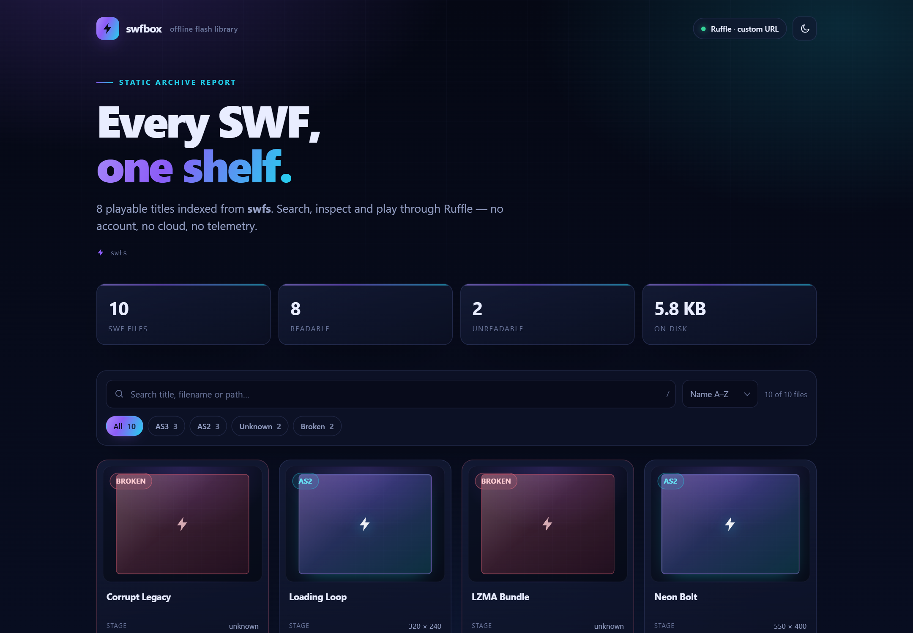

Live demo · plays in your browser
Every SWF,
one shelf.
swfbox reads a folder of old .swf files itself — stage size, frame rate,
ActionScript version, embedded title and creator — then gives you a searchable library and plays any title through
Ruffle. Nothing is uploaded.
npx swfbox serve ~/old-flash --open
Reads SWF itself
FWS and zlib-compressed CWS headers, bit-packed stage size, fixed-point frame rate, XMP metadata and the tags that tell AS2 from AS3.
Not an emulator
Ruffle does the playing. swfbox is the missing library and launcher — and it never pretends otherwise.
Offline by default
One explicit --fetch-ruffle downloads the player once; after that the whole archive works with no network.
The live demo loads Ruffle from unpkg, which is the only reason it can play in a browser.
Locally, swfbox --fetch-ruffle vendors it and nothing touches the network.
Demo archive: 10 synthetic SWFs, 8 readable, 2 deliberately broken. README MIT